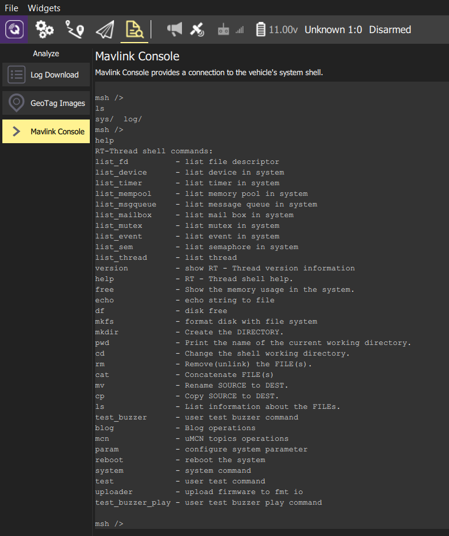

组件
FMT提供了功能强大的系统组件，各种组件提供了系统的大部分功能实现。由于硬件虚拟层（HAL）的引入，各个组件模块可以做到跟硬件平台无关，支持在各个不用的硬件平台上使用。用户只需要根据当前的硬件平台资源和驱动，来决定要使用哪些组件模块。 这里，我们将介绍FMT中常用的一些组件。
Console控制台
控制台组件供了控制台的输入/输出功能，主要用于调试信息的打印以及命令行的交互功能。console可以被映射到不同的设备上，如串口，USB等。
设置控制台设备
调用如下函数来将console设置到dev_name对应的设备上。
fmt_err console_set_device(char* dev_name);
console默认使用serial1设备 (TELEM2接口)。当连接QGC地面站，并在Mavlink Console输入任意字符，console将被自动切换到mav_console设备上，如下图所示。

当前console支持的设备名称如下：
- serialx： 标准串口设备，默认使用serial1
- mav_console: 基于mavlink协议的虚拟控制台设备。它将console的输入/输出数据封装为MAVLINK_MSG_ID_SERIAL_CONTROL的包，再通过串口或者USB进行发送，以支持QGC的Mavlink Console功能。
绑定Shell设备
调用如下函数将设备绑定到shell。绑定后，对应设备的输入将送给shell进行命令解析。若传入的dev=NULL，则默认将当前console的设备绑定到shell。
fmt_err console_mount_shell(rt_device_t dev);
控制台打印
控制台提供了如下两个函数来打印信息到控制台设备。
uint32_t console_printf(const char* fmt, ...);
uint32_t console_write(const char* content, uint32_t len);
常用的console_printf()用法类似printf()，支持各种格式化打印，且支持中断函数中打印，如：
console_printf("%f %d %x\n", 0.2, 33, 0xFF);
console_write()函数则提供了控制台数据直接写入的功能，如:
console_write(buffer, sizeof(buffer));
uMCN消息订阅/发布模块
uMCN (Micro Multi-Communication Node) 提供基于订阅/发布模式的安全跨进程通信方式，为FMT各个任务，模块之间进行信息交换的主要方式。
定义消息
定义一条新的uMCN只需简单几步。这里举例说明定义一条新的消息，消息名称为my_mcn_topic，消息内容(topic)为：
typedef struct {
uint32_t a;
float b;
int8_t c[4];
} test_data;
- 定义消息：在源文件头部（通常为发布该消息的源文件）添加如下定义：
MCN_DEFINE(my_mcn_topic, sizeof(test_data));
这里my_mcn_topic为该消息的名字，sizeof(test_data)为消息内容的长度。uMCN对消息的长度和类型没有限制，所以理论上可以用uMCN传递任意消息类型。同时uMCN支持一个消息同时有多个发布者 (publisher) 和订阅者 (subscriber)。但是注意，同一个消息(名称)不可被重复定义，不然编译时会报重复定义的错误。
- 注册消息：调用
mcn_advertise函数注册该条消息：
mcn_advertise(MCN_ID(my_mcn_topic), _my_mcn_topic_echo);
这里my_mcn_topic同样为该消息的名字，MCN_ID是一个宏，用来根据消息名称得到McnHub节点。_my_mcn_topic_echo为该条消息的打印函数。当在控制台输入指令mcn echo my_mcn_topic，将调用该条消息的打印函数来打印消息内容。用户可以自定义打印函数来输出想要数据格式。比如my_mcn_topic的打印函数如下这样定义：
static int _my_mcn_topic_echo(void* param)
{
test_data data;
if(mcn_copy_from_hub((McnHub*)param, &data) == FMT_EOK){
console_printf("a:%d b:%f c:%c %c %c %c\n", data.a, data.b,
data.c[0], data.c[1], data.c[2], data.c[3]);
}
return 0;
}
订阅消息
订阅者要获取消息的数据，首先需要先订阅消息，通过mcn_subscribe函数实现消息的订阅。uMCN支持同步/异步消息订阅，同步方式需要在订阅消息的时候传入一个消息句柄event_t用于线程同步。订阅消息遵循以下几个步骤：
- 声明消息：如果是在非定义该条消息的源文件中，则需要先申明该条消息。比如对于我们刚刚建立的
my_mcn_topic，需要在订阅消息的源文件头部添加
MCN_DECLARE(my_mcn_topic);
- 订阅消息：调用
mcn_subscribe(McnHub* hub, MCN_EVENT_HANDLE event_t, void (*cb)(void* parameter))函数来订阅消息。 其中cb为消息发布的回调函数，在每次发布消息时，回调函数将被调用 (注意: 回调函数将在发布消息的线程中被调用)。event_t为用于消息同步的事件句柄，这里一般用系统的信号量(semaphore)实现。当订阅成功后，函数将返回消息节点句柄McnNode_t。
这里分别对同步/异步的消息订阅举例：
同步订阅
rt_sem_t event = rt_sem_create("my_event", 0, RT_IPC_FLAG_FIFO);
McnNode_t my_nod = mcn_subscribe(MCN_ID(my_mcn_topic), event, NULL);
异步订阅
McnNode_t my_nod = mcn_subscribe(MCN_ID(my_mcn_topic), NULL, NULL);
发布消息
发布消息数据使用mcn_publish函数。比如
mcn_publish(MCN_ID(my_mcn_topic), &my_data);
这里my_data为要发布的数据，其类型为test_data。注意这里发布消息的类型需跟MCN_DEFINE()定义的消息数据类型一致，否则将发生非预期的后果。
读取消息
对于同步/异步的消息订阅方式，读取消息时也分为同步和异步方式。
对于同步订阅方式，调用mcn_poll_sync函数查询是否收到新的数据。如果没有新的数据，则将当前线程挂起，直到收到数据或者等待超时返回。当有新的数据到来后，调用mcn_copy函数读取数据。例如：
test_data read_data;
if(mcn_poll_sync(my_nod, RT_WAIT_FOREVER)){
mcn_copy(MCN_ID(my_mcn_topic), my_nod, &read_data);
}
这里my_nod为消息订阅时返回的消息节点句柄。
如果是采用异步订阅方式，使用mcn_poll函数查询是否有新的数据，该函数会立马返回。
test_data read_data;
if(mcn_poll(my_nod){
mcn_copy(MCN_ID(my_mcn_topic), my_nod, &read_data);
}
uMCN指令
FMT提供了mcn的指令来方便查看当前系统中的uMCN消息，指令用法如下：
msh />mcn --help
usage: mcn [OPTION] ACTION [ARGS]
Action:
list List all uMCN topics.
echo Echo a uMCN topic.
Option:
-c, --cnt Set topic echo count, e.g, -c=10 will echo 10 times.
-p, --period Set topic echo period(ms), -p=0 inherits topic period. The default period is 500ms.
输入mcn list将显示当前系统所有的topic
msh />mcn list
Topic #SUB Freq(Hz) Echo
---------------- ------ ---------- ------
usb_status 1 21.7 true
sensor_imu 1 500.0 true
sensor_mag 1 100.0 true
sensor_baro 1 100.0 true
sensor_gps 1 10.0 true
ins_output 3 500.0 true
fms_output 2 125.0 false
control_output 2 250.0 false
pilot_cmd 1 0.0 true
其中Topic为消息名称，#SUB为消息订阅者数量，Freq为消息发布频率，Echo表示该条消息是否提供了打印函数。
对于提供了打印函数的消息，可以输入mcn echo [topic_name]来打印消息。比如输入mcn echo sensor_imu将打印IMU的数据，按任意键结束。
msh />mcn echo sensor_imu
gyr:-0.000870 -0.002555 -0.003110 acc:0.011333 0.083641 -9.862786
gyr:-0.001118 -0.001791 0.001414 acc:-0.067505 -0.048334 -9.854862
gyr:0.002485 0.005287 0.005572 acc:-0.040842 -0.008587 -9.773908
gyr:-0.000103 -0.001102 0.003385 acc:-0.092554 -0.013108 -9.854832
gyr:-0.001078 0.002592 -0.003151 acc:-0.040336 0.019121 -9.748902
......
mcn echo指令支持-c和-p的Option来设置消息打印的条数和频率，默认打印频率500ms。 如果要打印10条消息，打印频率为100ms，可以输入mcn echo -c=10 -p=100 sensor_mag。
Param参数模块
param模块为系统提供参数功能，包括参数的定义，读取，存储和修改等。参数以文件形式存储在存储设备上，如SD卡。存储路径默认为/sys/param.xml或者/sys/hil_param.xml (HIL模式)。
系统上电会自动读取默认路径下的参数文件。若参数文件不存在，则使用默认的参数值。如果开启了blog日志记录，参数也会被记录到日志中，供仿真模型读取。目前支持的参数类型包括
enum param_type_t {
PARAM_TYPE_INT8 = 0,
PARAM_TYPE_UINT8,
PARAM_TYPE_INT16,
PARAM_TYPE_UINT16,
PARAM_TYPE_INT32,
PARAM_TYPE_UINT32,
PARAM_TYPE_FLOAT,
PARAM_TYPE_DOUBLE,
PARAM_TYPE_UNKNOWN = 0xFF
};
定义参数
在定义参数之前，有必要先了解一下FMT中参数的组织方式。FMT的参数以组(Group)为单位对参数进行组织，每个组可以包含一到任意多个参数。
举例说明，定义一个新的float类型的参数my_param1和uint32类型的参数my_param2，它们都属于同一个组my_group，则可以按照如下步骤定义：
- 申明Group： 在
param.h中申明新的组my_group
typedef struct {
......
param_group_t PARAM_GROUP(my_group);
} param_list_t;
- 定义Group：在
param.c中定义新的Group
param_list_t param_list = {
......
PARAM_DEFINE_GROUP(my_group),
};
- 申明Parameter：在
param.h中添加新的参数申明
typedef struct {
PARAM_DECLARE(my_param1);
PARAM_DECLARE(my_param2);
} PARAM_GROUP(my_group);
- 定义Parameter：在
param.c中定义新的参数
PARAM_GROUP(my_group) PARAM_DECLARE_GROUP(my_group) = \
{
PARAM_DEFINE_FLOAT(my_param1, 0.5),
PARAM_DEFINE_UINT32(my_param2, 1),
};
这里定义了两个新的参数my_param1（默认值0.5）和my_param2（默认值1）。如果是在已有Group中添加新的参数，那么则可以省去步骤1和步骤2.
读取参数
Param模块提供了如下宏定义来快速获取参数的值 (非查询模式)。用户需要选择匹配参数类型的宏并传入参数的组名称和参数名称.
#define PARAM_GET_INT8(_group, _name)
#define PARAM_GET_UINT8(_group, _name)
#define PARAM_GET_INT16(_group, _name)
#define PARAM_GET_UINT16(_group, _name)
#define PARAM_GET_INT32(_group, _name)
#define PARAM_GET_UINT32(_group, _name)
#define PARAM_GET_FLOAT(_group, _name)
#define PARAM_GET_DOUBLE(_group, _name)
除此之外,还可以通过如下函数来获取参数:
param_t* param_get(char* group_name, char* param_name);
param_t* param_get_by_name(const char* param_name);
param_t* param_get_by_full_name(const char* group_name, const char* param_name);
这些函数使用查询的方式查找与group_name和param_name匹配的参数。当参数较多时,查找速度较慢,所以不建议在算法模块中使用，,仅供系统指令(syscmd)模块使用.
设置参数
类似参数读取, param模块也提供了对应的宏来快速设置参数的值:
#define PARAM_SET_INT8(_group, _name, _val)
#define PARAM_SET_UINT8(_group, _name, _val)
#define PARAM_SET_INT16(_group, _name, _val)
#define PARAM_SET_UINT16(_group, _name, _val)
#define PARAM_SET_INT32(_group, _name, _val)
#define PARAM_SET_UINT32(_group, _name, _val)
#define PARAM_SET_FLOAT(_group, _name, _val)
#define PARAM_SET_DOUBLE(_group, _name, _val)
同样的,也可以使用如下函数来设置与group_name和param_name匹配的参数指：
fmt_err param_set_val(param_t* param, void* val);
fmt_err param_set_val_by_name(char* param_name, void* val);
fmt_err param_set_val_by_full_name(char* group_name, char* param_name, void* val);
fmt_err param_set_string_val(param_t* param, char* val);
fmt_err param_set_string_val_by_name(char* param_name, char* val);
fmt_err param_set_string_val_by_full_name(char* group_name, char* param_name, char* val);
调用上面的宏/函数设置完参数后，默认不会保存到参数文件，所以当系统重启之后将恢复之前的值。.如需将当前参数保存,需要调用param_save(char* path)函数来保存当前修改。其中path为参数文件的路径名称，若传入NULL则使用默认路径.
参数指令
FMT内置了param指令来对参数进行操作，其基本用法如下所示:
msh />param --help
usage: param [OPTION] ACTION [ARGS]
Action:
list List group(s) parameters.
group List all parameter groups.
set Set parameter.
get Get parameter.
save Save parameters to file.
load Load parameters from file.
Option:
-s, --save Save parameter value.
- param list: 显示所有的组和参数:
msh />param list
SYSTEM:
BLOG_MODE: 0
CALIB:
GYRO0_XOFF: 0.000000
GYRO0_YOFF: 0.000000
GYRO0_ZOFF: 0.000000
......
如果在list后加上组的名称,则只显示对应组的参数:
msh />param list SYSTEM
SYSTEM:
BLOG_MODE: 0
- param group: 显示所有的组:
msh />param group
Parameter Groups
--------------------
SYSTEM
CALIB
- param set: 设置参数的值，其用法如下 (方括号表示可选项,尖括号为必填项):
param set [group] <parameter> <value>
比如要将BLOG_MODE参数设置为2,可以使用如下指令:
param set SYSTEM BLOG_MODE 2
上述指令也可以简写为param set BLOG_MODE 2。但是请注意，由于这里没有指定组名，如果系统中存在两个相同名字的参数,则会默认写入第一个找到的参数.
- param get: 获取参数的值, 用法如下：
param get [group] <parameter>
- param save: 存储当前参数。可以输入
param save $path的方式来指定存储路径，否则将存储到默认路径。 - param load: 加载参数文件。可以输入
param load $path的方式来指定加载文件，否则将从默认路径进行加载。
Log日志模块
日志功能对于MBD的开发模式而言十分重要。因为MBD一个非常重要的仿真手段时开环仿真 (Open Loop Simulation)，其高度依赖于日志记录的模型输入/输出数据，从而得到和在硬件上运行完全一致的仿真数据。开环仿真要求记录的日志数据需要同时兼顾高吞吐量，低延时和高实时性的要求。
FMS日志模块提供了两种类型的日志, BLog (Binary Log) 和ULog (Micro Log) , 分别提供二进制日志数据记录和文字日志数据记录的功能。
BLog日志
首先有必要了解一下BLog记录日志的结构。BLog记录的日志以Bus (类似Simulink中Bus的概念)为单位，其中每个Bus又包含一个或者多个Element(类似Simulink中Element的概念)。所以BLog日志文件可以直接解析为Simulink可以使用的Bus数据，供模型进行仿真。下面同样举例说明BLog日志的用法。
添加日志数据
这里以IMU日志数据为例, 演示如何添加新的日志数据.
- 定义Element：使用宏
BLOG_ELEMENT(_name, _type)来定义一个Element，其中_name为Element名称，_type为Element类型，目前支持的类型如下：
enum {
BLOG_INT8 = 0,
BLOG_UINT8,
BLOG_INT16,
BLOG_UINT16,
BLOG_INT32,
BLOG_UINT32,
BLOG_FLOAT,
BLOG_DOUBLE,
BLOG_BOOLEAN,
};
我们构建的IMU输入如下所示：
blog_elem_t IMU_elems[] = {
BLOG_ELEMENT("timestamp_ms", BLOG_UINT32),
BLOG_ELEMENT("gyr_x_radPs_B", BLOG_FLOAT),
BLOG_ELEMENT("gyr_y_radPs_B", BLOG_FLOAT),
BLOG_ELEMENT("gyr_z_radPs_B", BLOG_FLOAT),
BLOG_ELEMENT("acc_x_mPs2_B", BLOG_FLOAT),
BLOG_ELEMENT("acc_y_mPs2_B", BLOG_FLOAT),
BLOG_ELEMENT("acc_z_mPs2_B", BLOG_FLOAT),
};
如果要定义矩阵或者向量类型的数据，可以使用宏BLOG_ELEMENT_VEC(_name, _type, _num)。其中_num为向量的长度。
blog_elem_t IMU_elems[] = {
BLOG_ELEMENT("timestamp_ms", BLOG_UINT32),
BLOG_ELEMENT_VEC("gyr_radPs_B", BLOG_FLOAT, 3),
BLOG_ELEMENT_VEC("acc_mPs2_B", BLOG_FLOAT, 3),
};
- 定义Bus：使用宏
BLOG_BUS(_name, _id, _elem_list)将新的Bus添加到_blog_bus列表中。其中_name为Bus名称；_id为该条Bus的ID，用来唯一指代这条Bus数据；IMU_elems为Bus的Element数据。比如：
blog_bus_t _blog_bus[] = {
BLOG_BUS("IMU", BLOG_IMU_ID, IMU_elems),
......
};
记录日志数据
日志添加完成后就可以开始记录日志数据。同样，BLog日志记录以Bus为单位，每条Bus数据可以以各自的频率进行记录。使用blog_push_msg函数记录一条Bus数据。
比如如下代码将在IMU数据更新之后记录IMU的数据：
/* record INS input bus data if updated */
if (ins_handle.imu_updated) {
ins_handle.imu_updated = 0;
/* Log IMU data if IMU updated */
blog_push_msg((uint8_t*)&INS_U.IMU1, BLOG_IMU_ID, sizeof(INS_U.IMU1));
}
其中INS_U.IMU1为存放数据的变量, BLOG_IMU_ID为该条Bus的ID, sizeof(INS_U.IMU1)表示该条Bus数据的长度。
开启/关闭日志记录
可以使用blog start/stop指令来开启/关闭日志记录。也可以通过设置BLOG_MODE参数的值来自动开启/关闭BLog日志的记录：
/* Determines when to start and stop logging (Blog).
0: disabled
1: when armed until disarm
2: from boot until disarm
3: from boot until shutdown */
PARAM_DEFINE_INT32(BLOG_MODE, 0),
日志解析
TO BE ADDED
BLog指令
TO BE ADDED
ULog日志
ULog为RT-Thread提供的系统组件，提供文字日志记录的功能。文字日志可以用来输出系统的一些调试信息，从而供开发者进行问题定位。FMT支持将ULog输出到控制台和文件系统。
使用如下接口输出ULog日志信息：
ulog_e(TAG, ...) // Error
ulog_w(TAG, ...) // Warning
ulog_i(TAG, ...) // Info
ulog_d(TAG, ...) // Debug
ULog日志信息将被打印在控制台，并且同时被存储在/log/$session_id/ulog.txt中。
[1708] W/Status: FMS Unknown Mode
[1714] I/Status: FMS Status Disarm
[5479] I/Status: FMS Position Mode
[8268] I/Status: FMS Altitude Hold Mode
[9104] I/Status: FMS Manual Mode
[13034] I/Status: FMS Status Standby
[15005] I/Status: FMS Status Arm
[21673] I/Status: FMS Status Disarm